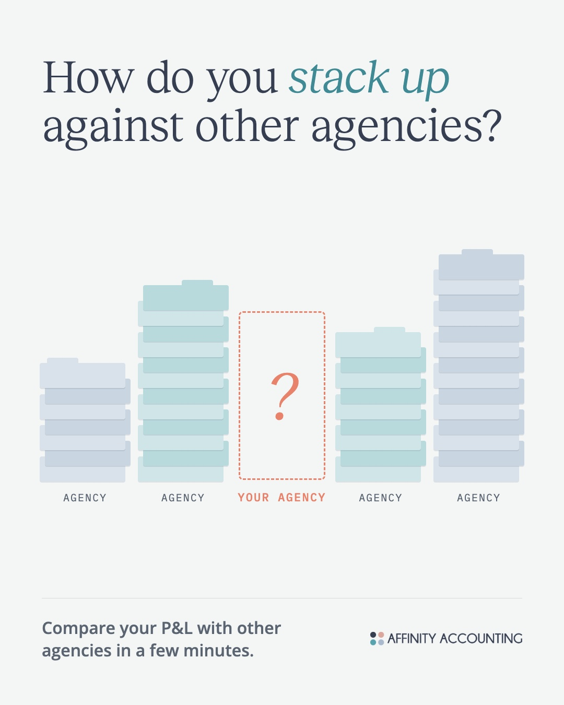
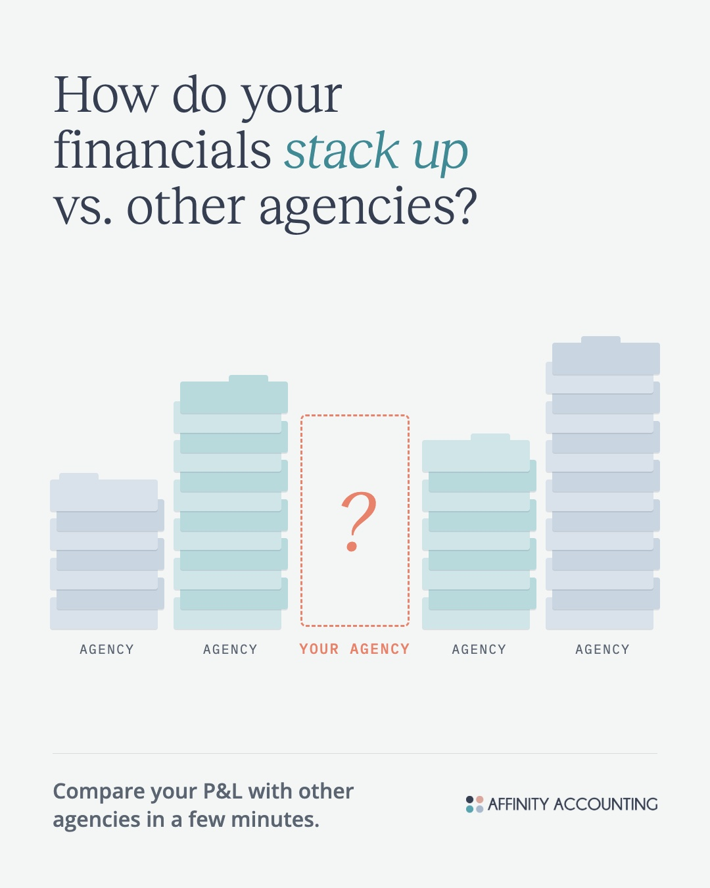
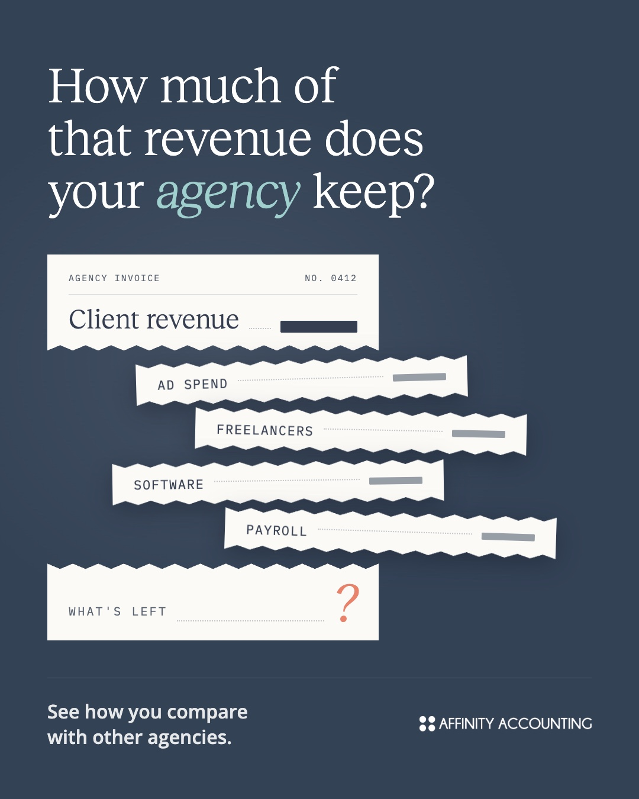
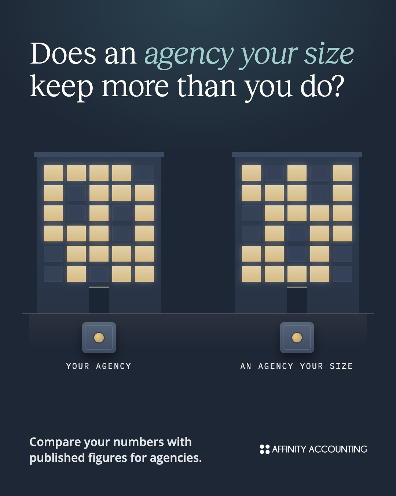

Marketing agency owners: are you spending more on payroll than other agencies your size? What about all those subscriptions? ... Marketing agency owners: are you spending more on payroll than other agencies your size? What about all those subscriptions?
If a competitor is doing the same work with a smaller payroll, they have more room to hire, pitch and price than you do. Your P&L shows what you spent, and it can't show you that.
Our free agency benchmark tool can. Enter your revenue and seven numbers from your P&L, add your email, and you'll see your results next to published figures for agencies. It takes about two minutes.
See where you land before you set next year's budget.

AFFINITYMKE.COMHow does your agency stack up?
Learn more
👍 Like💬 Comment↗ Share
Affinity AccountingSponsored · •••
Hey marketing agencies: would you know if you were overspending on payroll and subscriptions? Other agencies can check in two minutes... Hey marketing agencies: would you know if you were overspending on payroll and subscriptions? Other agencies can check in two minutes.
Payroll is usually the biggest number on an agency's P&L, and software adds up one small subscription at a time. It's hard to tell if either one is too high until you see what other agencies spend.
Enter your revenue and seven numbers from your P&L, add your email, and you'll see your results next to published figures for agencies. It's free and takes about two minutes.
You'll see which of your numbers are high, which are low and which are right in line.

AFFINITYMKE.COMCheck your agency's numbers
Learn more
👍 Like💬 Comment↗ Share
Affinity AccountingSponsored · •••
Big billings can hide a small profit. After ad spend, freelancers, subscriptions and payroll, how much does your agency keep? ... Big billings can hide a small profit. After ad spend, freelancers, subscriptions and payroll, how much does your agency keep?
We hear this one from agency owners a lot. They know their top line, but once the costs that run through client projects come out, they aren't sure what's left.
Another agency could bill the same amount and keep more of it. Here's how to see where you stand. Enter your revenue and seven numbers from your P&L, add your email, and you'll see your results next to published figures for agencies. It's free and takes about two minutes.

AFFINITYMKE.COMWhat does your agency keep?
Learn more
👍 Like💬 Comment↗ Share
Affinity AccountingSponsored · •••
Another agency could have your revenue, your kind of clients and your size of team, and still keep more than you do... Another agency could have your revenue, your kind of clients and your size of team, and still keep more than you do.
From the outside, the two of you would look the same. The difference is in how much goes to payroll, software, marketing and client costs.
You can find out which side you're on today. Enter your revenue and seven numbers from your P&L, add your email, and you'll see your results next to published figures for agencies. It's free and takes about two minutes.
Then you'll know which number to look at first.

AFFINITYMKE.COMIs another agency keeping more?
Learn more
👍 Like💬 Comment↗ Share
Affinity AccountingSponsored · •••
Agency owners: before you make your next hire, find out if your payroll is already high for an agency your size... Agency owners: before you make your next hire, find out if your payroll is already high for an agency your size.
One more salary is a lot easier to say yes to when you know what other agencies spend on payroll. Without that, you're guessing with the biggest cost on your P&L.
Enter your revenue and seven numbers from your P&L, add your email, and you'll see your results next to published figures for agencies. It's free and takes about two minutes.
Check your number before you send the offer.